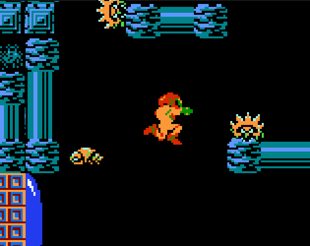

This project was mainly done in Unity with the C# language for scripts.
I contributed to implementing the main movement mechanics and creation of enemies.
I also helped add in the game audio and experimented with creating animations, with Samus being the most complicated so far.
